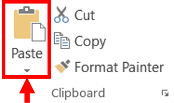
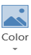
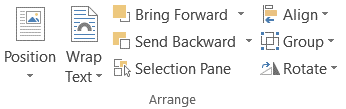
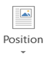
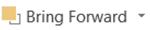

Modificar Objetos
Cuando usted inserta una imagen en Word, puede hacer con ella varias cosas para modificarla:
- Seleccione la imagen.
- Coloque el cursor sobre uno de los pequeños cuadros que aparecen al seleccionar la imagen.
Utilice los cuadros de las esquinas para cambiar de forma proporcional el ancho y alto de la imagen, y el resto de los cuadros para cambiar el ancho y alto de la imagen de forma individual. - Cuando el cursor cambie a la forma de flecha de dos puntas, oprima el botón izquierdo del ratón y arrastre el cursor hacia el centro de la imagen para disminuir el tamaño y hacia fuera de la imagen para aumentarlo.
- Suelte el botón cuando la imagen alcance el tamaño deseado.
- Seleccione la imagen.
- Oprima la tecla SUPR o DEL.

- Inserte una nueva imagen.
- Oprima las teclas CTRL + C para copiar o bien, CTRL + X para cortar. O si prefiere, puede ir a la barra de herramientas y oprimir los botones "copiar" (copy) y "cortar" (cut).
- Coloque el punto de intersección en la posición donde desea copiar o mover la imagen.
- Oprima las teclas CTRL + V o el botón "pegar" (paste).


Una vez seleccionada la imagen se activará el menú correspondiente como una pestaña más de la cinta de opciones llamada Formato (Format).
La barra de imágenes está integrada de distintos grupos de herramientas, a través de las cuales se pueden realizar modificaciones sobre la imagen. Los grupos son:
Del grupo Ajustar (Adjust) se tiene:
Del grupo Organizar (Arrange) se tiene:
Del grupo Estilos de Imagen (Picture Style) se puede:
Del grupo Tamaño (Size) se puede:

| Icono | Descripción |
|---|---|
|
Sirve para aumentar o disminuir el brillo de la imagen. |
|
Permite aumentar o disminuir el contraste de la imagen. |
 |
Permite aplicar un filtro de color sobre la imagen. En este desplegable también encontrarás la opción Color transparente para hacer transparente un color a escoger en imágenes con determinados formatos de imagen (como por ejemplo JPG). |
|
Permite reducir el peso de las imágenes del archivo completo (o solo las seleccionadas) para que ocupen menos espacio en disco. |
|
Después de aplicar varios tratamientos a la imagen, como cambios de color y brillo, se puede volver a la imagen original mediante este botón. |



| Icono | Descripción |
|---|---|
 |
Ajusta la imagen respecto a la página de varias formas, tal y como se puede ver en los iconos de la ventana. |
|
Ajusta la imagen respecto del texto que la rodea de varias formas, tal y como se puede ver en los iconos de esta ventana. |
 |
Muestra la imagen seleccionada sobre los objetos que se encuentren en su mismo nivel. |
| Muestra la imagen seleccionada bajo los objetos que se encuentren en su mismo nivel. | |
| Alinea o distribuye varios objetos según la opción que se escoja. | |
|
Agrupa diferentes objetos para poder trabajar con ellos como si fuese uno solo. |
|
Muestra un menú con diferentes opciones de giro y volteo aplicables a la imagen. |


Aplicar diversos estilos a la imagen, además de poder añadirle un contorno o enmarcarla en determinada forma.

Indicar el tamaño de la imagen y permite modificarla en cierto momento.